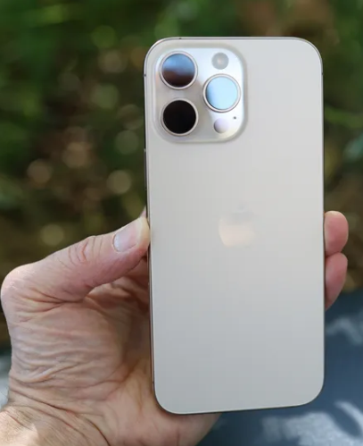
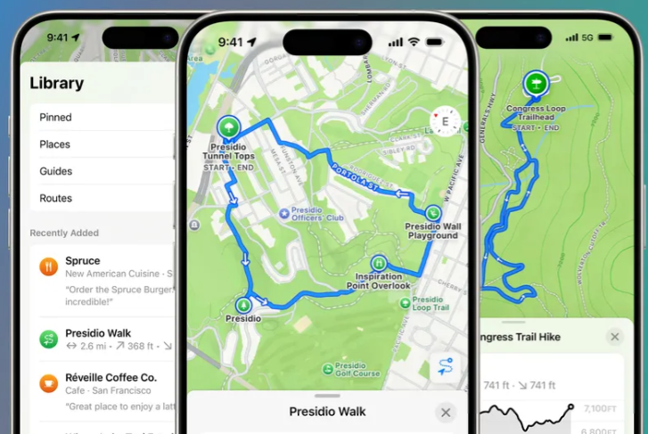
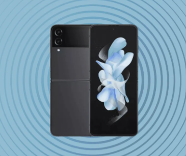

The latest iPhone 17 Pro Max leak may have given us another look at its upcoming redesign

It looks increasingly likely that the iPhone 17 Pro and iPhone 17 Pro Max are going to get a significant redesign, compared to the phones that they're replacing, and a new leak gives us another look at the refreshed chassis of the larger model.
Prolific tipster @MajinBuOfficial has shared an image of what look like metal molds ready to be used to manufacture the upcoming handset – and we also get the caption "iPhone 17 Pro Max is ready" alongside the picture.
We can see the large triple-lens rear camera in the top-left corner of the rear casing, and a cut-out to allow magnetic MagSafe connections for charging. The size of the camera protrusion reflects the larger camera bar that's expected to be on show.
|
iOS 18.4 will give your iPhone a much-needed maps upgrade – but only if you're in the EU

Apple is known for keeping a tight grip on its operating systems, but that resolve has been tested by the European Union (EU) in recent years. Now, Apple is being forced to concede another point and allow its users to change their default mapping app on iOS.
The change is due to arrive in the iOS 18.4 update, which is currently available as a beta. However, there’s a big catch: the new feature will only be available to users in the EU, meaning anyone in the US and around the world will miss out for now.
If you are located in the EU and have the latest iOS 18.4 beta, you can make the adjustment by opening the Settings app and going to Apps > Default Apps > Navigation. There, you will be able to change you default map app from Apple Maps to Google Maps, Waze, or something else.
|
The best Samsung Galaxy Z Flip 4 deals for March 2025

You'll find all of this week's best Samsung Galaxy Z Flip 4 deals just down below for those looking to snap up the remaining stock. Now there are new Samsung Galaxy Z Flip 5 deals on the market, this device is technically discontinued - although a limited number of retailers still have some listings at clearance prices.
Launching at a price of $999 / £999 for the baseline 128GB variant makes the Samsung Galaxy Z Flip 4 ever so slightly pricier than its Flip 3 predecessor. Luckily, however, there are a number of iterative improvements that cover nearly aspect of the device to help justify that price increase. The chipset, screen, and physical design have all been improved to the point where this was the most user-friendly and complete clamshell at the time (prior to the new Flip 5).
Starting with internal upgrades, the Galaxy Z Flip 4 packs in a respectable Snapdragon 8 Plus Gen 1 chipset alongside 8GB of RAM for speedy performance. An upgraded battery and new adaptive refresh rate display should help you get a full day's use out of the device, while sensor improvements in the camera offer better lighting and image stabilization for both video and stills. It's a decent set of upgrades, although the overall design, look, and feel of the device are relatively similar to the previous Galaxy Z Flip 3.
|
|